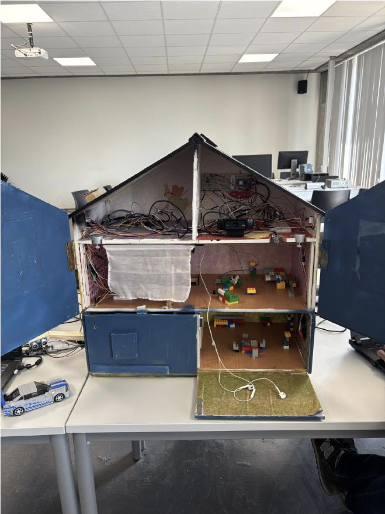

Computer Vision · IoT · Team Project
Smart House: Computer Vision & IoT
A connected smart-house prototype combining camera-based face recognition with sensors and actuators. I implemented the face-recognition feature and coordinated team integration, helping connect recognised users to personalised room settings.
Technology Stack
Overview
Our team built a smart-house prototype integrating camera input, environmental sensors and automated actions. Recognised users could trigger personalised room settings, including music and target temperature.

Open Full SizeMy contribution
I implemented the face-recognition feature using Python, OpenCV and the face_recognition library. As team leader, I coordinated integration and contributed to testing individual modules and the combined system.
System integration
The wider prototype connected sensors and actuators through MQTT and microcontroller-based components. Other team features included licence-plate recognition for the garage and environmental monitoring. Testing covered individual components before integration into the complete prototype.
The garage feature reads licence plates with Tesseract OCR. That part was built by other members of the team.
Scope & limitations
- This is a school prototype on a model house, not a deployed home system.
- No accuracy figure was measured for face recognition, so none is claimed here.
- The prototype was built by a team of four, and I did not build all of its hardware or software.